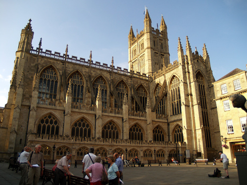

Now for the maths.
The Bath maths walk, is a cool way to show people the maths
all around them. It is a walking route all around the most
famouse and interesting parts of Bath, exploring them mathmaticaly.
Bath Abbey

Orange Grove
Pulteny Bridge

Milsom Street
The Circus
Royal Crescent
Victoria Park
Queen Square
Theatre Royal
Roman Baths and Pump Rooms